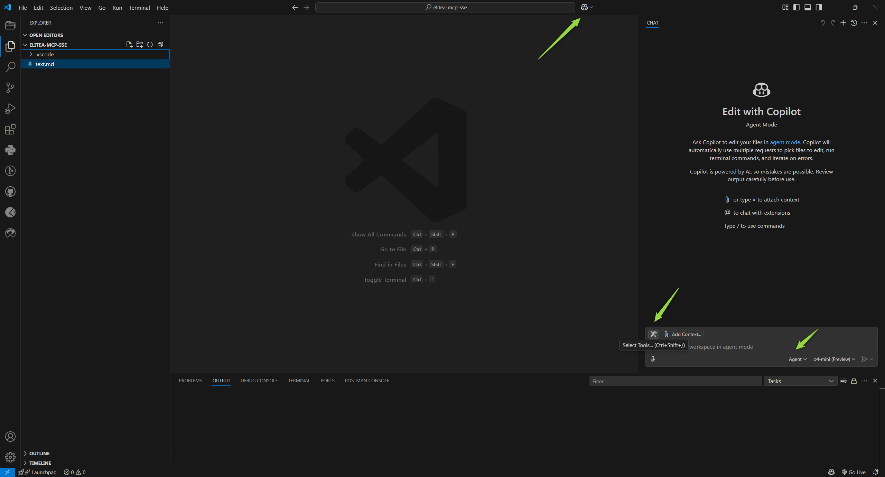
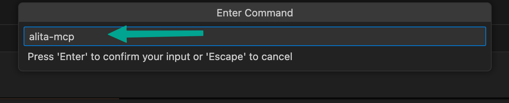
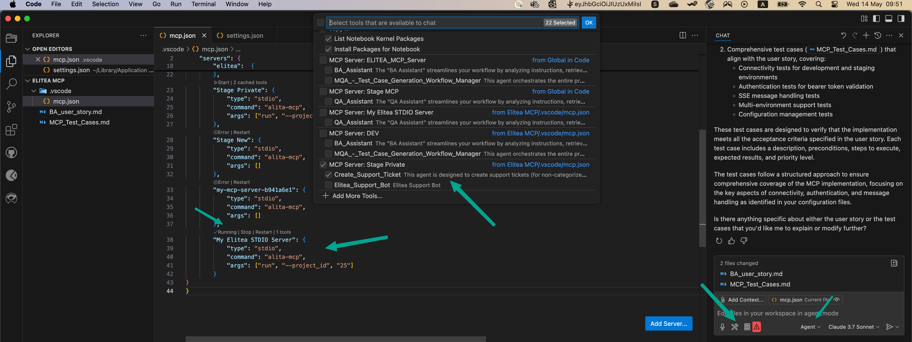
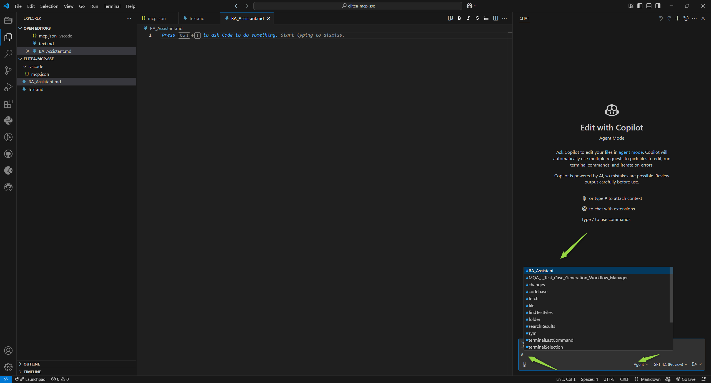
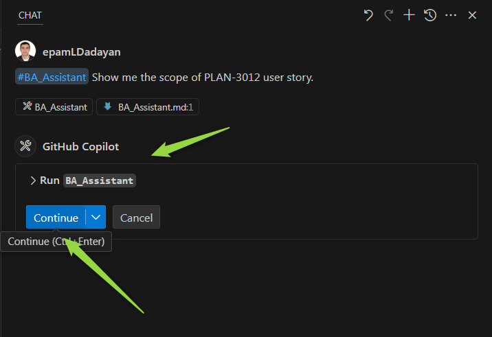
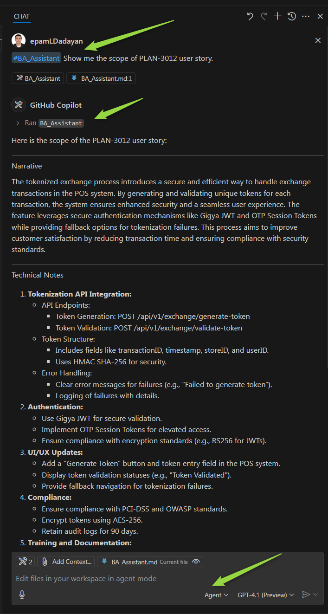
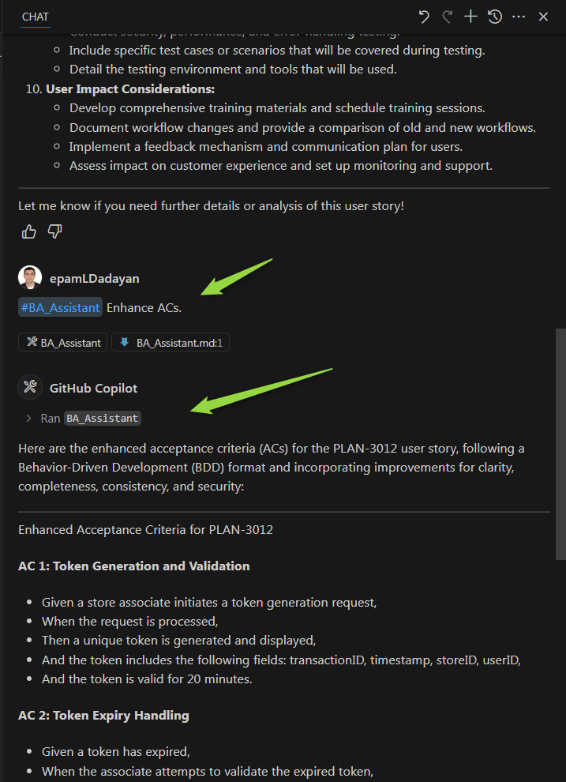
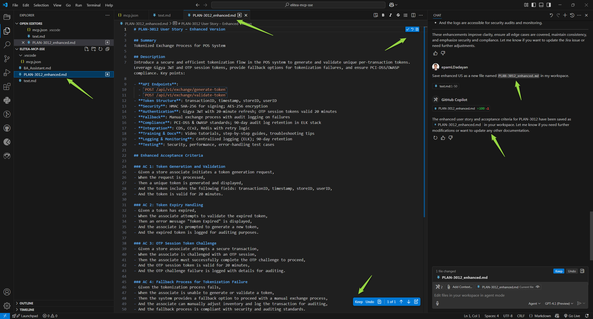
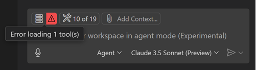

Elitea MCP Server Integration via STDIO¶
Overview¶
The Elitea platform supports integration with MCP clients through its dedicated MCP Server using Standard Input/Output (STDIO) for communication. This integration allows you to connect your favorite MCP-compatible tools to Elitea, enabling seamless interactions powered by the open Model Context Protocol (MCP).
With STDIO transport, you can interact with Elitea agents directly through a command-line interface, making it ideal for script-based workflows, automation, and environments where HTTP connections may not be practical. Whether you're using Visual Studio Code or another MCP client, this guide will walk you through connecting and leveraging Elitea's MCP Server capabilities via STDIO.
What is the MCP Protocol?¶
The Model Context Protocol (MCP) is an open standard designed to enable seamless communication between AI-powered tools, agents, and client applications. By following the MCP protocol, different systems can exchange context, tasks, and results in a consistent and interoperable way.
MCP is widely adopted in the AI ecosystem, making it easier to integrate various tools and platforms—like Elitea—with your favorite development environments and assistants.
To learn more about the technical details and capabilities of MCP, visit the official documentation: MCP Protocol.
Difference between SSE Transport and STDIO¶
Elitea MCP Server offers two transport options: Server-Sent Events (SSE) and Standard Input/Output (STDIO). These options differ not only in their implementation but also in their communication direction and use cases.
SSE Transport¶
- Direction: One-way communication (Elitea → Your Product)
- Purpose: Elitea uses SSE to push workflow updates, notifications, and real-time events to your product
- Uses HTTP with Server-Sent Events for communication
- Web-based and operates over network connections
- Requires authentication via HTTP headers
- Ideal for: Web applications, remote connections, and scenarios where you need to receive continuous updates without polling
- See the SSE Transport guide for details
STDIO Transport¶
- Direction: Two-way communication (Elitea ↔ Your Product)
- Purpose: Your product uses MCP STDIO client (such as alita-mcp) to exchange data, send commands, or receive responses with Elitea
- Uses local process input/output streams for communication
- Operates entirely within your local environment
- Authentication handled through command-line parameters
- Ideal for: Local development, CLI-based workflows, and scenarios where you need bidirectional communication
- Perfect for environments where HTTP connections are limited or not preferred
- No need for token management as authentication is handled through the command line
Communication Channels Summary¶
| Channel | Direction | Purpose | Example Use Case |
|---|---|---|---|
| SSE | Elitea → Your Product | Real-time workflow updates, notifications | Receiving workflow status updates from Elitea |
| STDIO (MCP) | Elitea ↔ Your Product | Data exchange, commands, responses | Sending data/results back to Elitea and responding to requests |
Prerequisites¶
Before you begin integrating with the Elitea MCP Server via STDIO, ensure you have the following:
-
Alita MCP Client
Thealita-mcpclient is required to connect to the Elitea MCP Server. Installation instructions are provided in this guide. -
Project ID
You'll need your Elitea Project ID to connect to the MCP Server. You can find your Project ID in the Settings Configuration section of the Elitea web interface. -
Authentication Token
An authentication token is required to securely connect your MCP client to Elitea. Tokens act as secure keys that authorize your applications or scripts to perform operations on behalf of your account and project. You can generate and manage tokens in the Elitea web interface under the Settings & Configuration – Personal Tokens section. For each project, you can create a token and set its expiration. Be sure to copy and store your token securely, as it will not be shown again after creation. -
Compatible Environment
Your operating system must support Python packages (Windows or macOS). -
Enable MCP Support in VS Code
MCP support is available starting in VS Code release 1.99. To enable MCP support, ensure thechat.mcp.enabledsetting is turned on (this setting is enabled by default). -
GitHub Copilot Agent
Ensure that GitHub Copilot is configured and running in Agent mode. This enables advanced AI-powered assistance and tool integration within your Elitea project.
How to Connect to ELITEA MCP Server¶
You can add and configure an Elitea MCP Server in VS Code using either Workspace or User settings. The STDIO transport requires installing the Alita MCP client on your system first.
Step-by-Step Setup¶
For macOS¶
Step 1: Install the Alita MCP Client
Open Terminal and run the following commands:
# Install pipx if not already installed
brew install pipx
pipx ensurepath
# Install alita-mcp
pipx install alita-mcp
Step 2: Set Up Environment Variables
Add the following to your shell configuration file:
For zsh (default shell in newer macOS versions):
# Add these lines to ~/.zprofile
export PATH="$PATH:$HOME/.local/bin"
export PYTHONPATH="$PYTHONPATH:$HOME/.local/pipx/venvs/alita-mcp/lib/python3.x/site-packages"
For bash:
# Add these lines to ~/.bash_profile
export PATH="$PATH:$HOME/.local/bin"
export PYTHONPATH="$PYTHONPATH:$HOME/.local/pipx/venvs/alita-mcp/lib/python3.x/site-packages"
Step 3: Reload Your Shell Configuration
Apply the changes by running:
# For zsh (default in newer macOS)
source ~/.zprofile
# For bash
# source ~/.bash_profile
Step 4: Configure the Client
Bootstrap the client with your deployment information:
# Set up your deployment URL and authentication token
alita-mcp bootstrap
This will start an interactive configuration process where you'll need to provide the following information:
Deployment URL: [Enter your Elitea deployment URL]
Authentication token: [Enter your authentication token]
Host (default: 0.0.0.0): [Press Enter to accept default or specify a host]
Port (default: 8000): [Press Enter to accept default or specify a port]
Example Configuration:
Deployment URL: https://nexus.elitea.ai
Authentication token: abcD123
Host (default: 0.0.0.0): [Press Enter]
Port (default: 8000): [Press Enter]
The bootstrap process will create a configuration file with these settings that the alita-mcp client will use for all future connections to the Elitea MCP Server.
For Windows¶
Step 1: Install the Alita MCP Client
Open Command Prompt or PowerShell and run the following commands:
# Install pipx if not already installed
python -m pip install --user pipx
python -m pipx ensurepath
# Install alita-mcp
pipx install alita-mcp
Step 2: Configure the Client
Bootstrap the client with your deployment information:
# Set up your deployment URL and authentication token
alita-mcp bootstrap
This will start an interactive configuration process where you'll need to provide the following information:
Deployment URL: [Enter your Elitea deployment URL]
Authentication token: [Enter your authentication token]
Host (default: 0.0.0.0): [Press Enter to accept default or specify a host]
Port (default: 8000): [Press Enter to accept default or specify a port]
Example Configuration:
Deployment URL: https://nexus.elitea.ai
Authentication token: abcD123
Host (default: 0.0.0.0): [Press Enter]
Port (default: 8000): [Press Enter]
The bootstrap process will create a configuration file with these settings that the alita-mcp client will use for all future connections to the Elitea MCP Server.
Setting Up in VS Code¶
-
Open Your Project
Launch VS Code and open the project or workspace where you want to use the Elitea MCP Server. -
Open GitHub Copilot Chat
Access the Copilot Chat panel in VS Code.

-
Switch to Agent Mode
In Copilot Chat, select Agent mode. -
Select Tools
Click the Select Tools icon. -
Add MCP Server
- Click Add More Tools.
- Choose + Add MCP Server.

- Select Command stdio.

- For Command, enter
alita-mcp.
- Enter a Server ID (use the default generated one or provide a descriptive name).

-
Choose Configuration Scope
You can save your MCP server configuration in either:- Workspace Settings (shared with your team, local to the project)
- User Settings (applies globally to all VS Code workspaces)

Option 1: Workspace Settings¶
If you choose Workspace Settings, VS Code will create a .vscode/mcp.json file in your project.
Follow these steps:
-
Open
.vscode/mcp.json
Navigate to the file in your workspace and open it. -
Add Project Info
Add the following for args, replacingproject_id_numberwith your actual project ID:"args": ["run", "--project_id", "project_id_number"] - Save and Start
Save the file, then click the Start button in the Copilot Chat interface to activate the server.

Note: This MCP server will only be available within this workspace.
Option 2: User Settings¶
If you choose User Settings, your MCP server configuration will be added to your global settings.json file.
Follow these steps:
-
Open
settings.json
Open your user settings file in VS Code. -
Add Project Info
Add the following for args, replacingproject_id_numberwith your actual project ID:"args": ["run", "--project_id", "project_id_number"] - Save and Start
Save the file, then click the Start button in the Copilot Chat interface to activate the server.

Note: This MCP server will be available globally for all your projects and workspaces in VS Code.
Example Server Configuration¶
When setting up your STDIO MCP server configuration, you have several options for the args parameter depending on your needs:
Option 1: Access All Agents in a Project¶
To access all available agents and pipelines in a specific project:
"elitea": {
"type": "stdio",
"command": "alita-mcp",
"args": ["run", "--project_id", "25"]
}
Option 2: Access a Specific Application within a Project¶
For more granular control, you can specify a particular agent or pipeline and a version:
"elitea": {
"type": "stdio",
"command": "alita-mcp",
"args": ["run", "--project_id", "25", "--app_id", "12", "--version_id", "3"]
}
Note: The
app_idandversion_idparameters are optional and can be used when you want to limit access to a specific application or version within your project.
Command-Line Reference¶
For reference, here are the corresponding command-line options:
# Using a specific application within a project (application_id and version_id are optional)
alita-mcp run --project_id YOUR_PROJECT_ID [--app_id YOUR_APP_ID] [--version_id YOUR_VERSION_ID]
# Using all available agents in a project
alita-mcp run --project_id YOUR_PROJECT_ID
Multiple MCP Servers¶
You can add as many MCP servers as you need. For example, if you have several Elitea projects and want to use different agents from each, simply repeat the above steps for each server—regardless of whether you use workspace or user settings.
Using Elitea Agents as MCP Tools¶
To use Elitea agents and pipelines as tools in VS Code via MCP, they must be tagged with mcp in Elitea.
Note: If you add or update agents/pipelines with the
mcptag after starting your MCP server, restart the server to sync and make them available as tools.
Tagging Agents and Pipelines¶
- In the Elitea web interface, tag your agents or pipelines with
mcp.
- Only tagged agents and pipelines will be synced and available as tools in VS Code.
Note: Only the "latest" version of each agent or pipeline tagged with
mcpwill be pulled and used. If you have multiple versions of the same agent/pipeline, ensure the version you want to use is the "latest".Important: If you have several agents with the same name, only one will be fetched and shown in VS Code. Please consider renaming your agents with unique names if you need them all to be fetched and used.
Using MCP Tools in Agent Mode¶
Once your MCP server is connected and your agents/pipelines are tagged:
- Open GitHub Copilot Chat
- Select Agent Mode
- Click the Tools Icon
- Select Synced Agents and Pipelines
- All synced tools (tagged with
mcp) will appear in the list. - By default, all are selected. You can search, select, or deselect tools as needed.

- All synced tools (tagged with
- Use Tools in Chat
- In the chat input, write your instructions. You can reference a tool directly by typing
#followed by the tool name (e.g.,#my_agent). - Copilot will automatically suggest and invoke tools as needed.

- In the chat input, write your instructions. You can reference a tool directly by typing
- Run the Tool
- When a tool is selected, click Run [tool name] to execute it.

- When a tool is selected, click Run [tool name] to execute it.
- Confirm Tool Execution
- By default, you'll be asked to confirm before a tool runs, for safety.
- Use the Continue button dropdown to auto-confirm for the session, workspace, or all future runs.
- Edit Tool Input Parameters (Optional)
- Click the chevron next to the tool name to view and edit input parameters before running.

- Click the chevron next to the tool name to view and edit input parameters before running.
- Review Output and Next Steps
- Follow the output and use the results as needed in your workflow.
Tip:
You can reference any available tool in your prompt by typing # and the tool name. This works in all chat modes (ask, edit, and agent mode).
Use Case: Enhancing Jira User Stories with the BA Assistant Agent¶
Let's walk through a real-world example to see how you can use an Elitea agent as an MCP tool in your workflow. In this scenario, we'll use the BA Assistant agent, which helps you analyze instructions, retrieve data, and perform actions in Confluence and Jira.
Scenario¶
You want to improve the acceptance criteria (ACs) of a Jira User Story. The BA Assistant agent, tagged with mcp, will help you read the ticket, enhance the ACs, and save the improved User Story as a local file—all from within GitHub Copilot Chat in VS Code.
Step 1: Ensure the Agent is Tagged¶
In Elitea, make sure your BA Assistant agent is tagged with mcp so it's available as a tool in VS Code.
Agent: BA Assistant
Tags: mcp
Step 2: Connect to Elitea MCP Server¶
Follow the earlier steps in this guide to connect your workspace to the Elitea MCP Server via STDIO and sync available agents.
Step 3: Open Copilot Chat and Select the Agent¶
- Open GitHub Copilot Chat in VS Code.
- Switch to Agent mode.
- Click the Tools icon and ensure BA Assistant is selected as a tool.
Step 4: Call the Agent with Your Instruction¶
In the chat input, provide a clear instruction referencing the BA Assistant tool. For example:
#BA Assistant
Show me the scope of PLAN-3012 user story. Enhance ACs.


Step 5: Review and Save the Output¶
- The BA Assistant agent will retrieve the Jira ticket, enhance the ACs, and present the improved User Story.
- The Github Copilot will save enhanced US as a new file named
PLAN-3012_enhanced.mdin my workspace. - Confirm the action if prompted.
- The enhanced User Story will be saved as a new file in your workspace.

That's it!
With just a few steps, you've used the BA Assistant agent as an MCP tool to automate and streamline your Jira workflow—directly from VS Code.
Troubleshooting & Tips¶
If you encounter issues while integrating or using the Elitea MCP Server via STDIO, use the following tips and solutions to resolve common problems:
1. No Agents or Pipelines Are Shown¶
- Check MCP Tag: Ensure your agents and pipelines in Elitea are tagged with
mcp. Only tagged items will sync and appear as tools in VS Code. - Restart the Server: If you add or update tags after starting the MCP server, restart the server to sync the latest agents and pipelines.
- Scope of MCP Server: Verify whether your MCP server is configured for the correct scope (User or Workspace). Sometimes, agents may not appear if the configuration is not in the expected location.
2. Command Not Found¶
- Path Issues: Make sure that the
alita-mcpcommand is properly installed and in your system's PATH. - Verify Installation: Run
which alita-mcpon macOS/Linux orwhere alita-mcpon Windows to confirm the command is available. - Reinstall Client: If needed, reinstall the client following the installation steps in this guide.
3. VS Code MCP Server Errors¶
- Error Indicator: If VS Code encounters an issue with an MCP server, an error indicator will appear in the Chat view.

- View Server Logs: Select the error notification in the Chat view, then choose Show Output to view detailed server logs.

- Command Palette: Alternatively, run
MCP: List Serversfrom the Command Palette, select your server, and choose Show Output for troubleshooting details.
4. Project ID Issues¶
- Verify Project ID: Double-check that you've entered the correct Project ID in your configuration.
- Command Arguments: Ensure the args array in your configuration is properly formatted as shown in the examples.
5. General Troubleshooting Tips¶
- Check Python Installation: Make sure Python is correctly installed on your system.
- VS Code Version: Make sure you are using VS Code version 1.99 or later, as MCP support is only available from this version onward.
- Configuration File Location: Confirm that your
mcp.json(for workspace) orsettings.json(for user) is correctly formatted and saved. - Multiple Servers: If you have multiple MCP servers configured, ensure you are interacting with the correct one in the Copilot Chat interface.
- Agent Mode: Always use Agent mode in Copilot Chat to access and use MCP tools.
6. Still Having Issues?¶
- Re-sync Tools: Try deselecting and reselecting tools in the Tools menu to force a refresh.
- Restart VS Code: Sometimes, simply restarting VS Code can resolve temporary glitches.
- Consult Logs: Review the output logs for specific error messages and search for solutions in the Elitea or VS Code documentation.
- Contact Support: If you continue to experience problems, reach out to your Elitea administrator or see below for support options.
Contacting ELITEA Support The primary way to reach our support team is via email:
Email: SupportAlita@epam.com
Please use this email address for all support-related inquiries.
Additional Resources and Useful Links¶
For further reading and to deepen your understanding of Elitea MCP Server integration and related technologies, explore the following resources:
- MCP Protocol – Official Documentation
- VS Code MCP Server Documentation
- ELITEA Documentation Home
- ELITEA Settings & Configuration
- ELITEA SSE Transport Integration
- ELITEA Support Resources
Stay up to date with the latest features and best practices by visiting these links regularly.